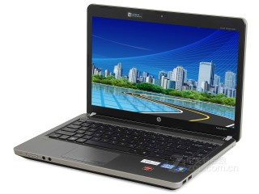

产品名称
惠普 4331s (QG641PA)
惠普 4431s (QG641PA) 基本参数
CPU 主频：
2400.000
CPU 系列：
英特尔酷睿i5 2 代系列（Sandy Bridge）
CPU 型号：
Intel酷睿i5 2430M
内 存:
DDR3 1333MHz 4GB, 最大内存容量: 16GB
硬 盘:
7200转, SATA, 750GB
光 驱:
光驱内置DVD刻录机
屏 幕:
14.00
显 卡:
1GB, GDDR5, AMD Radeon HD 6490M独立显卡
惠普 4431s (QG641PA) 多媒体设备
摄 像 头:
集成摄像头
音频系统:
内置音效芯片纠错
多 媒 体:
内置扬声器, 麦克风
惠普 4431s (QG641PA) 网络通信及其它
无线网卡:
支持802.11b/g/n无线协议，Intel WiFi Link
有线网卡:
1000Mbps以太网卡
蓝 牙:
支持，蓝牙3.0模块